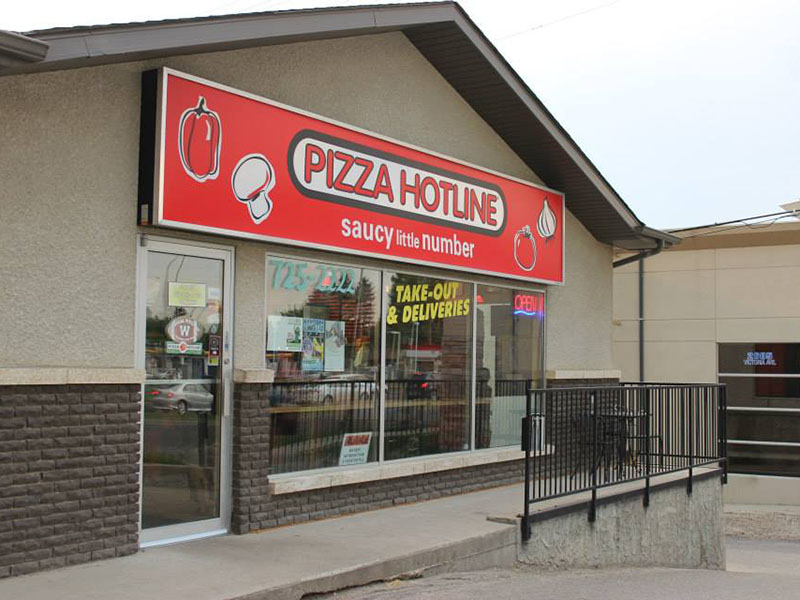

About Us
Pizza Hotline has been serving communities across Manitoba for decades, becoming one of the province’s most recognized local pizza chains. Founded in 1986 by Jerry and Theresa Cianflone, Pizza Hotline has built its reputation on great service, quality ingredients, and delicious meals.
From pizzas covered with fresh toppings to wings and sides, Pizza Hotline focuses on offering convenient and satisfying options for every occasion. Whether it’s lunch, dinner, or a late-night snack, we've made reliable delivery a core part of our customer experience.
Proudly based in Manitoba, Pizza Hotline continues to support the community while expanding its reach across the province. With our great taste, value, and service, our company is dedicated to making every meal enjoyable for customers across the province.

↑